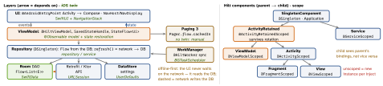

cross-platform · folio
In one line: Google’s recommended app: UI (Compose) observes StateFlow from a
ViewModel, which calls a repository whose single source of truth is
the local DB (Room) — the network only writes into it. Hilt builds the graph
at compile time; WorkManager runs deferrable work that must survive process
death and reboot. Every piece has an iOS twin (green).
Download PDF Print view LaTeX source


Hilt (Dagger underneath)
@HiltAndroidAppApplication →@AndroidEntryPointActivity/Service →@HiltViewModel+@Inject constructor. A missing binding fails the build (Koin fails at runtime). Use KSP, not kapt.@Module @InstallIn(X::class):@Binds= interface → impl, no code;@Provides= factory for types you don’t own (Retrofit, Room). Two of one type:@Qualifier. Runtime args:@AssistedInject; tests:@TestInstallInswaps a module.
ViewModel scope + SavedStateHandle
Each nav back-stack entry is a ViewModelStore: one VM per destination, cleared when popped; share one across a flow by scoping it to the graph’s entry. SavedStateHandle = Bundle-backed map that survives process death (getStateFlow(k, d), toRoute<T>()) — ids, not data.
Room
- SQL verified at compile time. A
Flowquery re-emits on any write to its table —distinctUntilChanged().@Transactionfor multi-query reads (@Relation);withTransaction{}for writes. - Migrations:
Migration(1, 2) { execSQL(…) }or@AutoMigration(needs the exported schema JSON in git) +MigrationTestHelper;fallbackToDestructiveMigration()= data loss. KMP since 2.7.
Example — the stack in 13 lines
@Dao interface NoteDao {
@Query("SELECT * FROM Note") fun all(): Flow<List<Note>>
@Upsert suspend fun upsert(n: List<Note>) }
@Singleton class NoteRepo @Inject constructor(
private val dao: NoteDao, private val api: NoteApi) {
val notes = dao.all() // UI reads the DB
suspend fun refresh() = dao.upsert(api.fetch()) // network -> DB
}
@HiltViewModel class NotesVM @Inject constructor(
saved: SavedStateHandle, repo: NoteRepo) : ViewModel() {
val folder = saved.toRoute<Notes>().folder // typed nav arg
val ui = repo.notes.stateIn(viewModelScope,
SharingStarted.WhileSubscribed(5_000), emptyList()) }WorkManager — guaranteed, not punctual
- Persisted in its own SQLite DB: survives death and reboot, honours Doze.
CoroutineWorker→Result.success/failure/retry(backoff exponential, 30 s). - Constraints (network, charging, battery/storage not low, idle); periodic ≥ 15 min.
enqueueUniqueWork(name, KEEP/REPLACE/APPEND, r)stops duplicate syncs;beginWith(a).then(b)chains. - Expedited (
setExpedited(OutOfQuotaPolicy.…)): quota by standby bucket; below Android 12 runs as a foreground service (getForegroundInfo). >10 min:setForeground(). Not for exact alarms or “now, visibly”.
DataStore (replaces SharedPreferences)
Preferences (keys) or typed (Proto / JSON + Serializer<T>); reads Flow<T>, writes edit{}/updateData{} — suspend, transactional. SharedPreferences: sync reads on main, apply() blocks in fsync. One instance per file per process or IllegalStateException.
Navigation & Paging
- Nav Compose 2.8+:
@Serializableroutes,composable<Profile>,navigate(Profile(id)),toRoute()— no string routes. Navigation 3 (1.0 Nov 2025): you own the back stack (SnapshotStateList<NavKey>),NavDisplay+entryProvider— likeNavigationStack(path:). - Paging 3:
PagingSource.load()→LoadResult.Page(data, prevKey, nextKey);Pager.flow.cachedIn(scope);RemoteMediatorfills Room from the network.
Traps
@Singletoneverywhere — state leaks across logins.- “WorkManager runs it now” — eventually, once constraints hold.
- A DataStore created in a composable — two instances, crash.
Remember: UI ← VM ← repo ← DB; the network writes the DB · Hilt at compile time · WorkManager survives reboot.